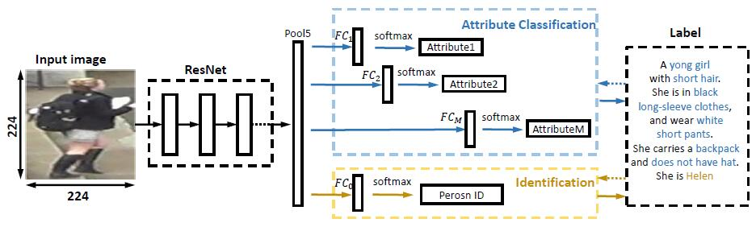

Person Re-identification Reading List
The purpose of person re-identification is to match pedestrians observed in non-overlapping camera views with
visual features. It has important applications in video surveillance, such as cross-camera tracking, multi-camera
event detection, and pedestrian retrieval. This problem is extremely challenging because it is difficult to
match the visual features of pedestrians captured in different camera views due to the large variations of lightings,
poses, viewpoints, image resolutions, photometric settings of cameras, and cluttered backgrounds.
The typical pipeline of a person re-identification system is shown below:

Person Re-identification
- DeepReID: Deep Filter Pairing Neural Network for Person Re-Identification. (CVPR 2014) ☻
This paper propose a filter pairing neural network (FPNN) to jointly handle misalignment, photometric and geometric transforms, occlusions and background clutter. This paper also explain each layers into the traditional method. - DML: Deep Metric Learning for Person Re-Identification. (2014)
This paper use a “siamese” deep part-based neural network to jointly learn the color feature, texture feature and metric in a unified framework. The network has a symmetry structure with two sub-networks which are connected by Cosine function. To deal with the big variations of person images, binomial deviance is used to evaluate the cost between similarities and labels, which is proved to be robust to outliers.
It has a modified version of this paper, which is:
Deep Metric Learning for Practical Person Re-Identification. ☻ - An Improved Deep Learning Architecture for Person Re-Identification. (CVPR 2015)
This paper propose a deep neural network architecture that formulates the problem of person re-identification as binary classification. It include: two layers of tied convolution with max pooling, cross-input neighborhood differences, patch summary features, across-patch features, higher-order relationships, and finally a softmax function to yield the final estimate of whether the input images are of the same person or not. - DGD: Learning Deep Feature Representations with Domain Guided Dropout for Person Re-identification. (CVPR 2016) ☻
This paper propose a Domain Guided Dropout algorithm to improve the feature learning procedure. This paper first mix all the domains together and train a Convolutional Neural Network (CNN) to get a strong baseline. After the baseline model is trained jointly with datasets of all the domains, we replace the standard Dropout with the Domain Guided Dropout and resume the training for several epochs. - Gated Siamese Convolutional Neural Network Architecture for Human Re-Identification. (2016) ☻
This paper propose a gating function to selectively emphasize such fine common local patterns by comparing the mid-level features across pairs of images. This produces flexible representations for the same image according to the images they are paired with. - Person Re-Identification by Multi-Channel Parts-Based CNN with Improved Triplet Loss Function. (CVPR 2017)
This paper propose a novel multi-channel parts-based convolutional neural network (CNN) model under the triplet framework for person re-identification. Specifically, the proposed CNN model consists of multiple channels to jointly learn both the global full-body and local body-parts features of the input persons. The CNN model is trained by an improved triplet loss function that serves to pull the instances of the same person closer, and at the same time push the instances belonging to different persons farther from each other in the learned feature space. - A Discriminatively Learned CNN Embedding for Person Re-identification. (2016)
This paper combine two models (verification and identification) to learn more discriminative pedestrian descriptors. The structure is similiar with the DeepID (face verification) model. - DPFL: Person Re-Identification by Deep Learning Multi-Scale Representations. (2017)
This paper jointly learn discriminative scale-specific features and maximise multi-scale feature fusion selections in image pyramid inputs. - AlignedReID: Surpassing Human-Level Performance in Person Re-Identification. (2017) ☻ ☻
In the learning stage, they have two branches for learning a global feature and local features jointly. In the local branch, they align local parts by introducing a shortest path loss. In the inference stage, they discard the local branch and only extract the global feature. They also adopt a mutual learning approach in the metric learning setting, to allow two models to learn better representations from each other. They find that the system with re-ranking has a higher level of accuracy than the human.


Regard Re-ID problem as Rank problem
- Re-ranking Person Re-identification with k-reciprocal Encoding. (2017) ☻
This paper regard re-ID as a retrieval problem. Given a probe person, we want to search in the gallery for images containing the same person in a cross-camera mode. After an initial ranking list is obtained, a good practice consists of adding a re-ranking step, with the expectation that the relevant images will receive higher ranks. Therefore, this paper introduce a k-reciprocal encoding method for re-ID re-ranking. It consists of three steps. First, we encode the weighted k-reciprocal neighbor set into a vector to form the k-reciprocal feature. Then, the Jaccard distance between two images can be computed by their k-reciprocal features. Second, to obtain a more robust k-reciprocal feature, we develop a local query expansion approach to further improve the re-ID performance. Finally, the final distance is calculated as the weighted aggregation of the original distance and the Jaccard distance. It is subsequently used to acquire the re-ranking list. - DarkRank: Accelerating Deep Metric Learning via Cross Sample Similarities Transfer. (2017)
- GLAD: Global-Local-Alignment Descriptor for Pedestrian Retrieval. (2017)
This paper use pose to do alignment and regard Re-ID as rank problem. It consists of part extraction and descriptor learning modules, where several part regions are first detected and then deep neural networks are designed for representation learning on both the local and global regions. A hierarchical indexing and retrieval framework is designed to eliminate the huge redundancy in the gallery set, and accelerate the online Re-ID procedure.
Include other model
- APRnet: Improving Person Re-identification by Attribute and Identity Learning. (2017)
This paper combine Re-ID and Attribute recognition into a single network. It proposes a very simple convolutional neural network (CNN) that learns a re-ID embedding and predicts the pedestrian attributes simultaneously. This multi-task method integrates an ID classification loss and a number of attribute classification losses, and back-propagates the weighted sum of the individual losses. - ACRN: Person Re-Identification by Deep Learning Attribute-Complementary Information. (2017 CVPR)
This paper combine Re-ID and Attribute recognition into a single network. - PBFnet: Pose Invariant Embedding for Deep Person Re-identification. (2017)
This paper use pose to improve accurate. This paper introduces the pose invariant embedding (PIE) as a pedestrian descriptor. First, in order to align pedestrians to a standard pose, the PoseBox structure is introduced, which is generated through pose estimation followed by affine transformations. Second, to reduce the impact of pose estimation errors and information loss during PoseBox construction, this paper design a Pose Box fusion (PBF) CNN architecture that takes the original image, the PoseBox, and the pose estimation confidence as input. - SpindleNet: Person Re-identification with Human Body Region Guided Feature Decomposition and Fusion. (2017 CVPR)
This paper use pose to do alignment. This paper propose a novel Convolutional Neural Network (CNN), called Spindle Net, based on human body region guided multi-stage feature decomposition and tree-structured competitive feature fusion. The body regions are obtained from a body region proposal network (RPN). Our ReID features can then be extracted from the seven body regions through a multi-stage ROI pooling pipeline. The FEN takes the person image together with the region proposals as input and computes one global feature vector of the full image and seven sub-region feature vectors corresponding to the seven proposed body sub-regions. With the FFN, a final feature vector can be computed by merging the full image feature vector and the sub-region feature vectors together. The final feature vector can be used to distinguish different persons. - HydraPlus-Net: Attentive Deep Features for Pedestrian Analysis. (2017) ☻
This paper combine Re-ID and Attribute recognition by proposing a new attention-based deep neural network, named as HydraPlus-Net (HPnet), that multi-directionally feeds the multi-level attention maps to different feature layers. Specifically, it proposes a multi-directional attention (MDA) module that aggregates multiple feature layers within the attentive regions extracted from multiple layers in the network. The HP-net consists of two parts, one is the Main Net (M-net) that is a plain CNN architecture, the other is the Attentive Feature Net (AF-net) including multiple branches of multi-directional attention (MDA) modules applied to different semantic feature levels.

Other
- Unlabeled Samples Generated by GAN Improve the Person Re-identification Baseline in vitro. (2017)
Person Search
- Joint Detection and Identification Feature Learning for Person Search. (CVPR 2017)
This paper propose a new deep learning framework for person search. Instead of breaking it down into two separate tasks—pedestrian detection and person re-identification, we jointly handle both aspects in a single convolutional neural network. An Online Instance Matching (OIM) loss function is proposed to train the network effectively, which is scalable to datasets with numerous identities.